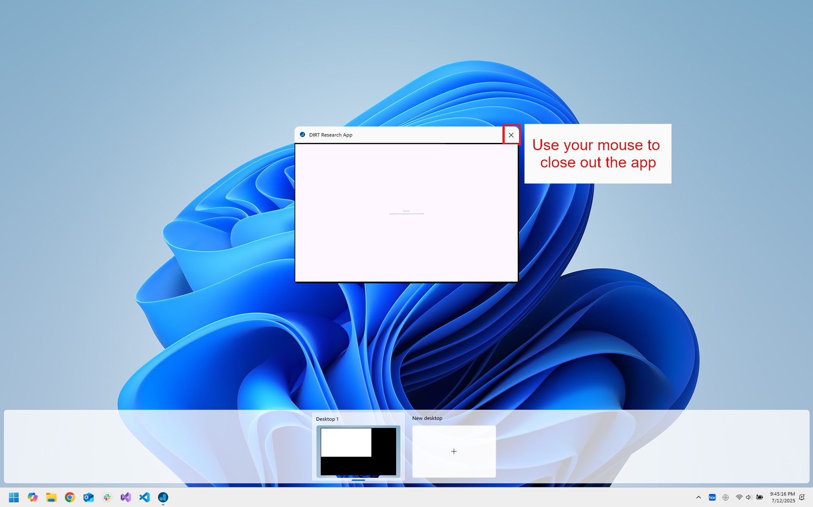

Troubleshooting Common Errors
When using the DIRT App and DIRT watch, you may run into some errors or issues. Please follow the appropriate instructions below
to help you resolve these errors and issues. If there is something not covered below, please reach out and let us know!
Error when opening the DIRT App
⚠️ Issue: Sometimes, when the DIRT App is opening, it may only partially launch similar to
the image below.

✅ Solution: If you do get into this problem, press the ⊞ Windows button + Tab button
to show all the apps currently opened and use your mouse to close out of the partially launched DIRT App (shown
in the image below). Once you do this, you can reopen the DIRT App again.

Error when uploading your data
⚠️ Warning: At the end of all studies, you will see the screen "Please Wait..." like the one below. At this point, your data is being uploaded and it may take a few minutes.
If more than 10 minutes have passed and your DIRT Research App is still stuck on this screen, you have run into an error in this process.

✅ Solution: If you do get into this problem, press the ⊞ Windows button + Tab button
to show all the apps currently opened and use your mouse to close out of the DIRT App (shown in image below).
Please reach out to let us know you ran into an error during your data upload.
Do not attempt to participate in the same study again unless we ask you to. We will have a record of your participation to credit you.
